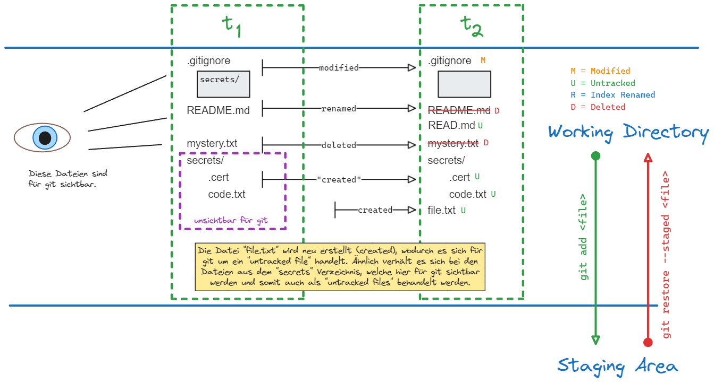
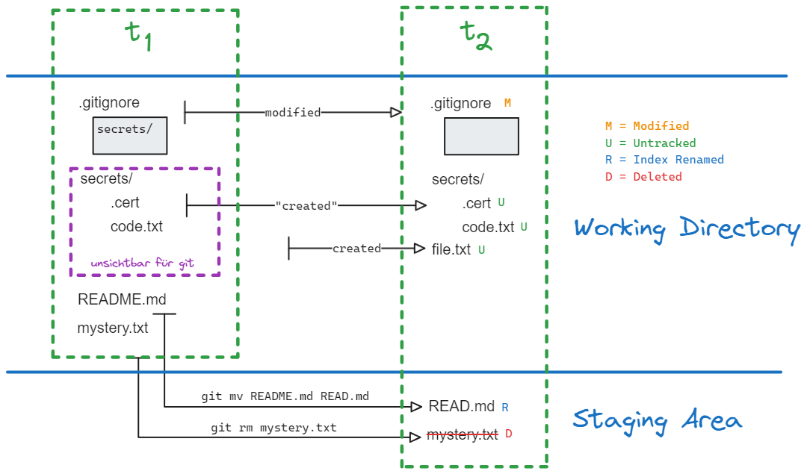

Git
Schaubild

git status
Dieser Befehl zeigt alle Änderungen die von git festgestellt wurden.
Syntax:
git add
Fügt Dateien/Verzeichnis aus der Working Directory der Staging Area hinzu.
Syntax:
git restore
Macht Änderungen im Working Directory rückgängig.
Syntax:
git restore --staged
entfernt eine Datei aus der Staging Area, sodass die Änderungen nur noch im Working Directory vorhanden sind.
Syntax:
git restore --cached <file> und git restore --staged <file> sind äquivalent.
git rm & git mv
Statt der manuellen Verschiebung/Umbenennung (move) und Löschung (delete) von Dateien/Verzeichnissen empfiehlt sich die Verwendung von git. Dadurch werden Änderungen direkt in die Staging Area überführt und es ist kein git add <file> notwendig.
Löschen:
Verschieben/Umbenennen:

git commit
Der Befehl speichert alles aus der Staging Area im lokalen Repository. Der Befehl git commit ruft den [[Setup, Konfiguration und Identität#^b9e4b1|core.editor]] auf, in welchem sich die Commit-Nachricht verfassen lässt. Ein Shortcut ist der Befehl:
Setup
Die Installation von git lässt sich mit dem folgenden Befehl leicht überprüfen.
Tipp
git --version / git -v verwenden im Hintergrund den Befehl git version.
Konfiguration
git wird über drei Dateien konfiguriert. Sind dieselben Einstellungen in mehreren Konfigurationsdateien enthalten, so überschreibt .git/config die Einstellungen aus ~/.gitconfig, welche wiederum [path]/etc/gitconfig überschreibt.
Alle Konfigurationen anzeigen:
Eine Konfiguration auslesen:
Eine Konfiguration setzen:
[path]/etc/gitconfig
Einstellungen hier gelten für alle Benutzer und alle Repositories auf dem System.
Warning
Hierfür werden Admin-Privilegien benötigt.
~/.gitconfig
Einstellungen hier gelten für einen einzelnen Benutzer und seine Repositories.
`.git/config
Einstellungen hier gelten für ein einzelne Repository.
Identität
Der Name und die Email müssen gesetzt werden, dafür eignen sich die Flags --system oder auch --global, so müssen diese nur einmalig angelegt werden.